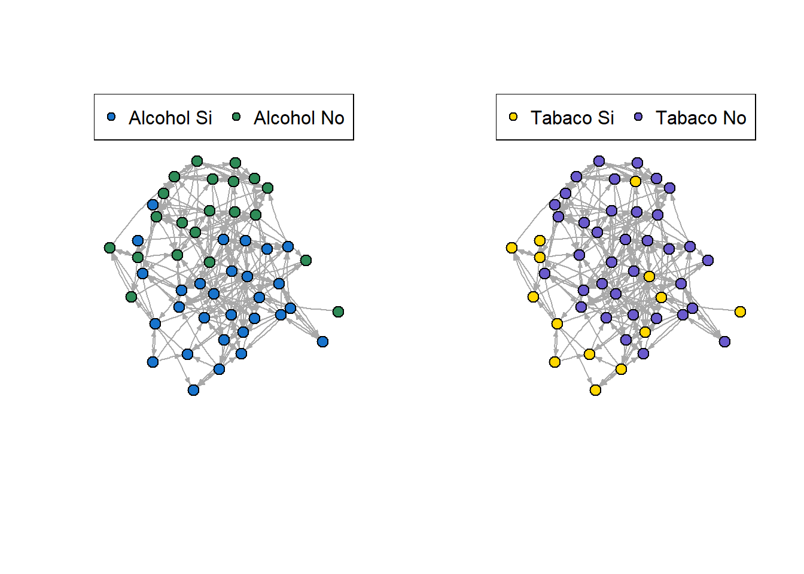

library(igraph)
library(dplyr)
library(ergm)
library(sna)
library(texreg)
library(intergraph)4 ERGM: inferencias en la formación de enlaces
4.1 Inferencias en Redes: Expected Random Graph Models (ERGM)
Esta metodología permite calcular la probabilidad de un enlace con un modelo que pondera distintos atributos de la red, de los nodos y de los enlaces.
Funciona con una lógica similar a un modelo “logit” pero en redes.
4.2 Librerías
4.3 Ejemplo: ERGM
Vamos a usar una red de amistad entre adolescentes simulada (no son datos reales). En esta red cada nodo tiene los atributos de consumo de tabaco y de alcohol.
load('datos/red_adolescentes.Rdata')
net Network attributes:
vertices = 50
directed = TRUE
hyper = FALSE
loops = FALSE
multiple = FALSE
bipartite = FALSE
total edges= 220
missing edges= 0
non-missing edges= 220
Vertex attribute names:
Alcohol Tabaco vertex.names
No edge attributesVisualicemos esta red marcando con distinto color a las personas que consumen y no consumen cada sustancia:
set.seed(999)
inet <- intergraph::asIgraph(net)
l = layout.kamada.kawai(inet)
par(mfrow=c(1,2))
V(inet)$color <- ifelse(V(inet)$Alcohol == 1, "dodgerblue3","seagreen")
plot(inet , layout=l, vertex.size = 10, vertex.frame.color = "black", vertex.label.cex = .7, vertex.label = NA, edge.curved = .1, edge.arrow.size = .3)
legend("topleft", legend=paste('Alcohol',c('Si','No')), pch=21, pt.bg=c("dodgerblue3","seagreen"), horiz = T)
V(inet)$color <- ifelse(V(inet)$Tabaco == 1, "gold","slateblue")
plot(inet , layout=l, vertex.size = 10, vertex.frame.color = "black", vertex.label.cex = .7, vertex.label = NA, edge.curved = .1, edge.arrow.size = .3)
legend("topleft", legend=paste('Tabaco',c('Si','No')), pch=21, pt.bg=c("gold", "slateblue"), horiz = T)
mod0 <- ergm(net ~ edges)Starting maximum pseudolikelihood estimation (MPLE):Obtaining the responsible dyads.Evaluating the predictor and response matrix.Maximizing the pseudolikelihood.Finished MPLE.Evaluating log-likelihood at the estimate. mod1 <- ergm(net ~ edges + nodematch("Tabaco") + nodematch("Alcohol"))Starting maximum pseudolikelihood estimation (MPLE):
Obtaining the responsible dyads.
Evaluating the predictor and response matrix.
Maximizing the pseudolikelihood.
Finished MPLE.
Evaluating log-likelihood at the estimate. mod2 <- ergm(net ~ edges + mutual + nodematch("Tabaco") + nodematch("Alcohol"))Starting maximum pseudolikelihood estimation (MPLE):
Obtaining the responsible dyads.
Evaluating the predictor and response matrix.
Maximizing the pseudolikelihood.
Finished MPLE.
Starting Monte Carlo maximum likelihood estimation (MCMLE):
Iteration 1 of at most 60:Warning: 'glpk' selected as the solver, but package 'Rglpk' is not available;
falling back to 'lpSolveAPI'. This should be fine unless the sample size and/or
the number of parameters is very big.Optimizing with step length 1.0000.
The log-likelihood improved by 0.0707.
Convergence test p-value: 0.3043. Not converged with 99% confidence; increasing sample size.
Iteration 2 of at most 60:
Optimizing with step length 1.0000.
The log-likelihood improved by 0.0188.
Convergence test p-value: 0.0125. Not converged with 99% confidence; increasing sample size.
Iteration 3 of at most 60:
Optimizing with step length 1.0000.
The log-likelihood improved by 0.0403.
Convergence test p-value: 0.4185. Not converged with 99% confidence; increasing sample size.
Iteration 4 of at most 60:
Optimizing with step length 1.0000.
The log-likelihood improved by 0.0499.
Convergence test p-value: 0.0066. Converged with 99% confidence.
Finished MCMLE.
Evaluating log-likelihood at the estimate. Fitting the dyad-independent submodel...
Bridging between the dyad-independent submodel and the full model...
Setting up bridge sampling...
Using 16 bridges: 1 2 3 4 5 6 7 8 9 10 11 12 13 14 15 16 .
Bridging finished.
This model was fit using MCMC. To examine model diagnostics and check
for degeneracy, use the mcmc.diagnostics() function.screenreg(list(mod0,mod1,mod2))
========================================================
Model 1 Model 2 Model 3
--------------------------------------------------------
edges -2.32 *** -4.32 *** -4.25 ***
(0.07) (0.22) (0.21)
nodematch.Tabaco 1.41 *** 1.12 ***
(0.19) (0.18)
nodematch.Alcohol 1.55 *** 1.25 ***
(0.18) (0.17)
mutual 1.81 ***
(0.24)
--------------------------------------------------------
AIC 1482.12 1324.01 1274.73
BIC 1487.92 1341.42 1297.94
Log Likelihood -740.06 -659.01 -633.36
========================================================
*** p < 0.001; ** p < 0.01; * p < 0.05